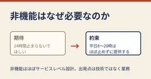
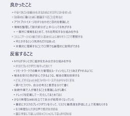

フューチャー技術ブログ
https://future-architect.github.io/
フューチャーの開発者による公式技術ブログです。業務で利用している技術を幅広く紹介します。
フィード

非機能はなぜ必要なのか 42
42
フューチャー技術ブログ
非機能要件はほとんどサービスレベル設計と同じもので、出発点は技術ではなく業務だと考えています。期待と約束の違い、数値にする順番、保証の対象について、社内の非機能要件ガイドラインを読んで感じた違和感から整理します。
3日前
生成 AI 時代の音声会話読書法のすすめ 1
フューチャー技術ブログ
M.J.アドラーの『本を読む本』の読書法を下敷きに、生成 AI の音声会話機能を使って紙の本を手に持ったまま読み進める読書法を紹介します。書籍の読ませ方、システムプロンプト、実際のつぶやきの例も載せます。
4日前

3年分の反省をAIに読ませたら、同じ失敗をしているだけだった 3
フューチャー技術ブログ
3年分の「良かったこと・反省すること」メモをAIに分類させたら、同じ失敗を繰り返していただけでした。反省を読み返す役をAIに任せた仕組みと、卒業できる反省とできない反省の違いを考えます。
5日前
ブラウザでPDF/Office文書などを表示できるビューアを作りながらAI slopについて考えた 38
フューチャー技術ブログ
Office ファイルや PDF をブラウザで表示するためのドキュメント形式 BDF とビューアを、AI に作ってもらいながら仕上げました。その過程で考えた、AI slop の正体についても書きます。
6日前
秋のブログ週間2026 1
フューチャー技術ブログ
秋のブログ週間とは2020年から始まったブログリレーの企画です。元ネタは、秋の読書週間（文化の日を中心とした10/27〜11/9の2週間）です。これに合わせて、平日にブログ記事を投稿していこうというブログリレーなイベントです。
7日前

Agent Toolkit for AWS で始める Well-Architected Framework Review
フューチャー技術ブログ
Agent Toolkit for AWS の aws-well-architected-review スキルの仕様を整理し、公開サンプルに score・quick・full の3モードでレビューを実施して出力を比べます。AWS Well-Architected Agent との違いにも触れます。
11日前
AWS開発環境のOpenSearchの使い分け
フューチャー技術ブログ
AWSのOpenSearchのManaged ClusterとServerless（NextGen）を実際に開発環境に投入し、Pricing Calculatorでは見えない利用料の様子をまとめました。
12日前
コードが読めないのは、文法を知らないからなのか？ ― プログラミングパラダイムを「読むときの問い」として考える
フューチャー技術ブログ
関数型のコードが読みにくい理由を、知識の量ではなく読み方に求めた考察です。命令型・構造化・オブジェクト指向・関数型・宣言型を、コードを読むときに投げる問いとして並べ直し、TypeScriptと生成AIのコードを読む場面へ持ち帰ります。
13日前
ファクトリーイノベーションWeek2026[秋]参加レポート
フューチャー技術ブログ
2026年9月に幕張メッセで開催されたファクトリーイノベーションWeek[秋]の参加レポートです。製造業の生成AI活用のトレンドとして、作業動画を生成AIに入力し、熟練者の知識と動きを継承するアプローチを紹介します。
14日前
E2E テストのフィードバックループを小さくするためのプラクティス
フューチャー技術ブログ
コーディングエージェントの普及で E2E テストの比重が上がるなか、テスト基盤の側でフィードバックループを小さくする4つのプラクティス（デプロイレスのテスト実行・テストの並列化・自己完結型のテストレポート・分散トレーシング）を紹介します。
17日前
E2Eテストを爆速にする: オンメモリPostgreSQLのpgmem
フューチャー技術ブログ
完全にオンメモリで動き、テストケースごとにフォークしてスケールするPostgreSQL「pgmem」を作りました。テストダブルの分類からアーキテクチャ、テスト用API、パフォーマンスまでを紹介します。
18日前
技育祭2026秋で「“優秀な誰か”の下位互換にならないために」というタイトルで発表してきました
フューチャー技術ブログ
技育祭2026秋 Day1 で「“優秀な誰か”の下位互換にならないために ※ただし”誰か”にはAIを含む」というタイトルで登壇しました。単一の物差しで勝負すると下位互換になるという問題意識から、経験を掛け合わせて模倣されない価値を作る話をし、当日答えきれなかった質問にもこの記事で回答します。
19日前
AWS Certified AI Business Strategist 合格体験記 - 公式問題とGemini Notebookでベータ試験に合格
フューチャー技術ブログ
AWS Certified AI Business Strategist（AIB-C01）のベータ試験に日本語で合格しました。試験の概要と、公式練習問題とGemini Notebookを使った約4時間の準備、受験した感想を紹介します。
20日前
bpmn.io で始める AI-Ready な業務フロー管理
フューチャー技術ブログ
業務フローの記述形式に BPMN 2.0 を採用し、bpmn.io のエディタ・bpmnlint による静的解析・生成 AI によるレビュー・bpmn-to-image での画像化で管理する方法を紹介します。
24日前
「ソフトウェアエンジニアリングの基礎」から見る読書マップ
フューチャー技術ブログ
オライリー・ジャパンの『ソフトウェアエンジニアリングの基礎 ―コーダーからエンジニアになるための実践ガイド』を読んだ感想と、各章の「関連リソース」に挙がる書籍55冊を整理した読書マップを紹介します。
25日前
フューチャー製 AIアクセラレータ「Mark-I」開発の紹介
フューチャー技術ブログ
ITコンサルを本業とするフューチャーが、FPGA を使った AI アクセラレータ『Mark-I』を独自開発した背景と、SPU・PINK・RISC-V コントローラからなるアーキテクチャ、主要スペック、リアルタイム顔認識とジェスチャー認識のデモ動画を紹介します。
1ヶ月前
非ITエンジニアの元医療従事者と事業企画推進が体感したAI駆動開発研修の全貌
フューチャー技術ブログ
元診療放射線技師と元開発PMの事業企画推進という非ITエンジニアの2人が、Healthcare Innovation Group のAI駆動開発研修に参加しました。医療機器の保守管理アプリと手術記録アプリを3ヶ月で動くプロトタイプにするまでの5つのステップと、研修設計の4つのカギを紹介します。
1ヶ月前
クラウド入門 - 知っておくと良い心構え - Part1
フューチャー技術ブログ
クラウドインフラを触る前に知っておくと良い心構えを講義形式でまとめた連作の Part1 です。責任共有モデルとフルマネージドサービス、ステートレス設計とスケーラビリティ、最小権限・ネットワーク境界・シークレット管理の 3 原則に加えて、AI エージェントにクラウド操作を代行させるときのリスクと対策を扱います。
1ヶ月前
Java 26 / Java 27 リリースまとめ
フューチャー技術ブログ
Java 26（HTTP/3 対応・AOT キャッシュの全 GC 対応・Lazy Constants）と Java 27（G1 とコンパクトオブジェクトヘッダの既定化・耐量子 TLS・JFR の秘匿化）の主な JEP と、JEP 以外の運用に関わる変更、アップグレード時の注意点をまとめます。
1ヶ月前
Java 27：オブジェクトヘッダが 8 バイトになる（JEP 534）
フューチャー技術ブログ
Java 27 で JEP 534 により Compact Object Headers がデフォルトで有効になり、オブジェクトヘッダが 12 バイトから 8 バイトに縮みました。ヘッダの中身、小さくなるオブジェクトとならないオブジェクト、ヒープ使用量の実測、移行時に確かめることを整理します。
1ヶ月前
Java 26：final を本当に final にする準備（JEP 500）
フューチャー技術ブログ
Java 26 で入った JEP 500 により、リフレクションで final フィールドを書き換えると警告が出るようになりました。背景の Integrity by Default、警告と例外の違い、Gson・Jackson での挙動、対処方法を整理します。
1ヶ月前
Java連載2026：Java 26／27リリース記念ブログ連載
フューチャー技術ブログ
Java 27のリリースを記念して、Java 26／27をテーマにしたブログリレーを開催します。AI時代のJavaの立ち位置と、公開スケジュールを紹介します。
1ヶ月前
知らない業界の下調べを AI に任せたら、肝心の項目がごっそり抜けていた
フューチャー技術ブログ
業界の下調べを AI に任せると、字数の指定に合わせて工程・構成・オブジェクトといった肝心の項目が落ちました。字数ではなく書くべき節で縛り、出典を3段に分けて確認状況を持たせた手順と、人が確かめるべき箇所をまとめます。
1ヶ月前
WebMCPを試してみたがまだ時期尚早だった(2026年9月時点)
フューチャー技術ブログ
ブラウザだけでAIからWebアプリを操作できるWebMCPを、ChromeとChatGPTアプリのブラウザで試した作業メモです。現時点では実用には程遠いという感想でした。
1ヶ月前
第21回言語処理若手シンポジウム (YANS2026) 参加報告
フューチャー技術ブログ
2026年8月16日から18日にかけて仙台国際センターで開催されたYANS2026に、プラチナスポンサーとして協賛しました。シンポジウムの様子と、当社が贈呈したスポンサー賞、そして注目した発表についてご報告します。
2ヶ月前